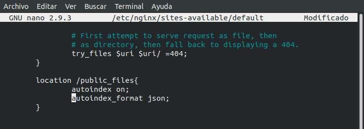

Actividad 4
NGINX es un software de servidor web de código abierto. En su versión inicial, funcionaba en servidores web HTTP.
Sin embargo, hoy en día también sirve como proxy inverso, balanceador de carga HTTP y proxy de correo electrónico para IMAP, POP3 y SMTP.
Fue lanzado oficialmente en octubre del 2004. El creador comenzó su proyecto como un intento de solucionar el problema C10k.
C10k es el reto de gestionar diez mil conexiones al mismo tiempo. Por esa razón, NGINX ofrece una arquitectura asíncrona y controlada por eventos, característica que hace de NGINX uno de los servidores más confiables para la velocidad y la escalabilidad.
Nginx destronó en gran parte a Apache sobre los sitios más populares del mundo. De hecho según estudios recientes de W3Techs, Nginx está en segundo lugar como el server más usado, con 41,8% siguiendo los pasos de Apache, que está en primer lugar con un 47% de mercado.
Vamos a partir de tener nginx instalado, en caso contrario lo instalamos con:
sudo apt install nginx | sudo ufw allow 'Nginx Full'
Vamos a añadir los puertos 81 y 82 para los 2 sitios que vamos a dar de alta, para eso vamos a editar el fichero /etc/nginx/sites-available/default:
Los directorios ya los tenemos creados en el sitio, como los hemos hecho en apache.
Ponemos el log como deseamos, este ejmplo es para sitioPhp en el otro caso seria igual pero cambiando sitioPhp por sitioNode:
Ademas para el sitioPhp vamos a activar la compresión a partir de 80Kb:
Vamos a controlar los errores 404, para eso creamos 404.html en /var/www/errores
Vamos a mostrar los ficheros en JSON:

Aquí podemos ver el resultado:
Vamos a hacer privado todo sitio que quieran entrar que tenga la palabra private:
Lo último que queda es el sitioNode que tenemos que hacer una redirección que se hace de la siguiente forma:
(la url era documentación pero lo he cambiado a documentation)
rewrite ^(/documentation)(.*)$ http://nodejs.org/en/;